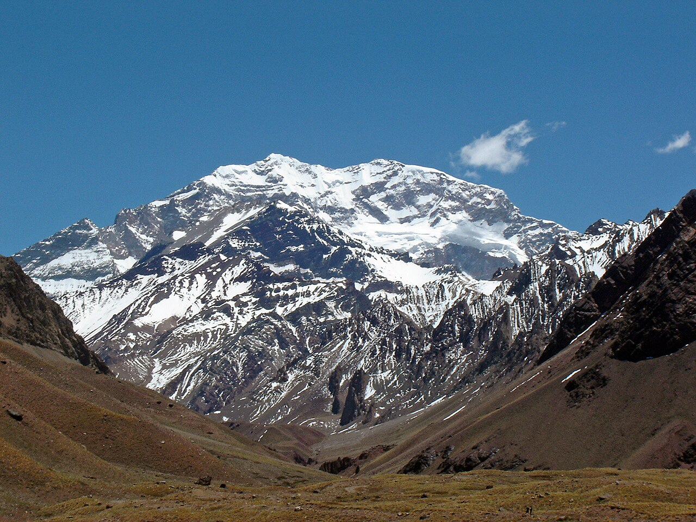
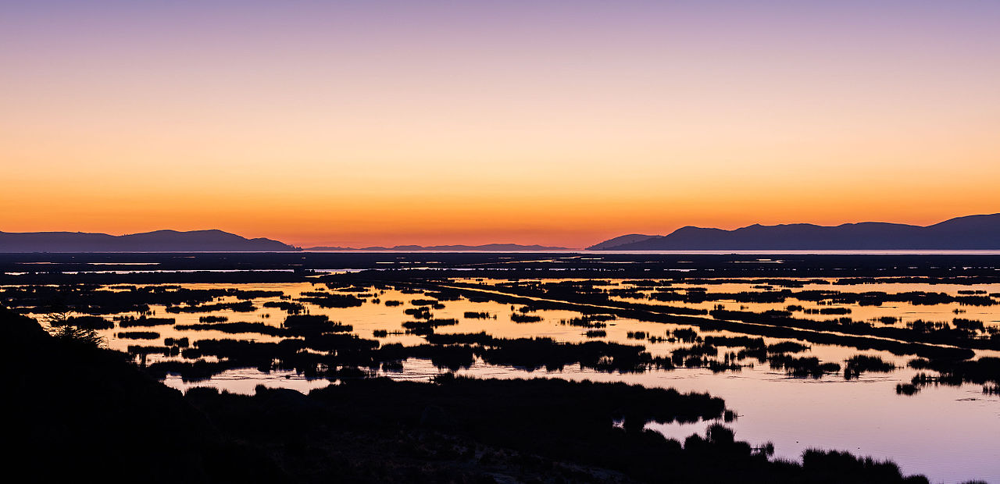
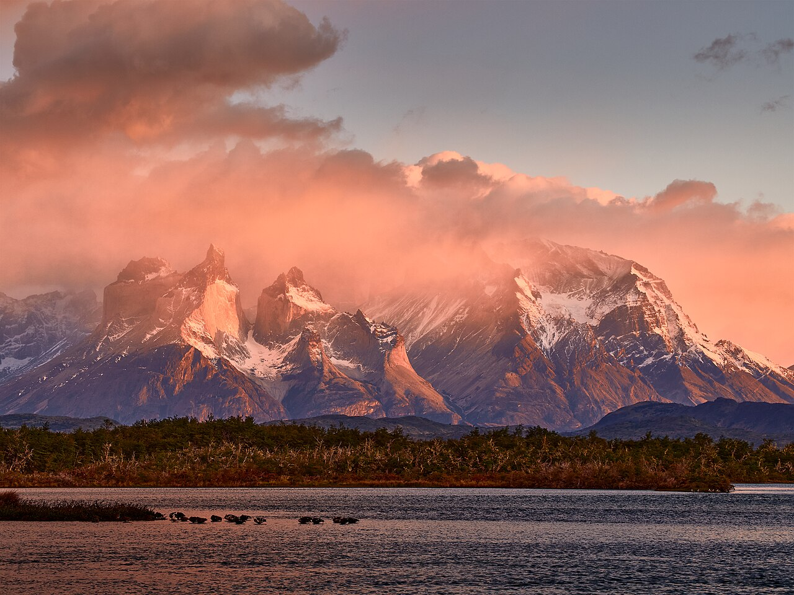

South America — 7 Countries
The backbone of a continent. The longest mountain range on Earth.
Five things that will astonish you
Elevation comparison
Five of the six highest peaks outside Asia belong to the Andes. Only the Himalayas surpass what the Andes has quietly built over millions of years.
In pictures



A living range
The Andes is not a single landscape — it is a world unto itself. From tropical cloud forests in Colombia and Ecuador to the hyper-arid Atacama Desert, from the wind-scoured Patagonian steppe to the high-altitude wetlands of Bolivia, the range holds nearly every climate zone on Earth.
Over 30,000 species of plants grow here — roughly one in six of all plant species on the planet. The altiplano, a vast plateau sitting above 3,500 m, supports millions of people, herds of vicuñas, and flamingos wading in turquoise salt lakes.
Ancient civilizations — the Tiwanaku, the Wari, the Inca — didn't just survive here. They built roads, aqueducts, and cities at altitudes that leave most visitors breathless. Their descendants still do.
"The Andes are not just mountains. They are the spine of an entire continent — the source of its mightiest rivers, the cradle of its oldest civilizations." — Adapted from Humboldt, Cosmos, 1845